The knitter, rebuilt in detailand in the prologue it is her hands that sew and lift
The old knitter was a handful of plain shapes: an egg for a head, a cone for a skirt, tubes with a ball on the end for arms. She's been rebuilt from scratch. She has a face, spectacles, grey hair in a bun, a cardigan over her dress, an apron, a fringed shawl, and arms that bend at the shoulder, elbow and wrist, ending in hands with jointed fingers.
In the prologue's sewing shot she now holds the needle herself. Her right hand pinches it and draws each stitch while her left hand steadies the doll. In the next shot it's her hands, not thin air, that take the doll by its sides and lift it.
Please make the model for the owner of the doll much more detailed. And the sewing scene in the intro is just the needle moving by itself, the owner should hold it and move arms and hands.
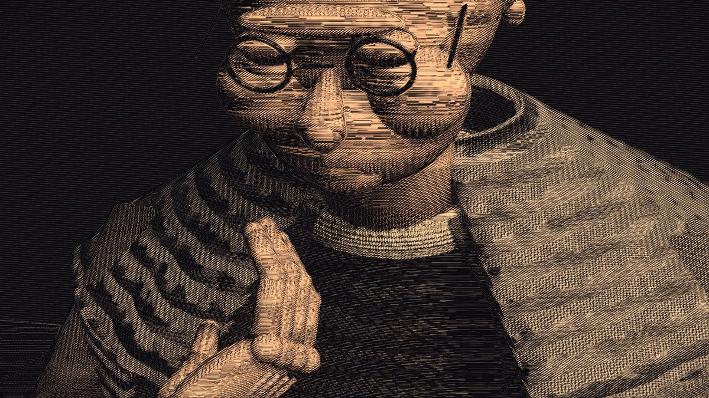
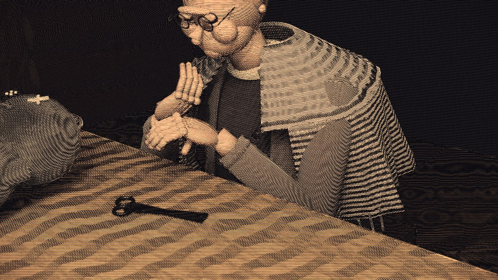
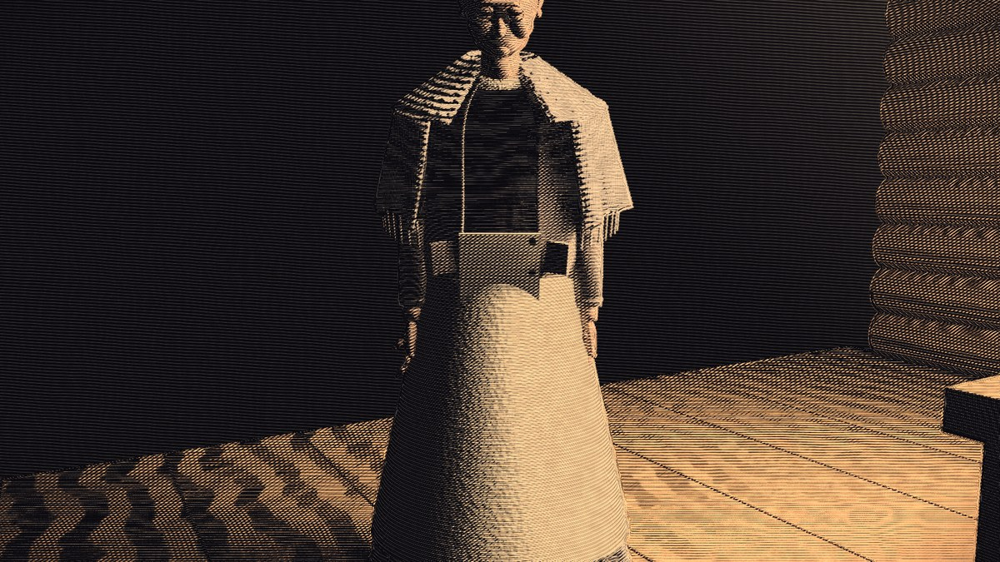
Her arms are aimed with a small two-joint solver: give it where the hand must be, and it works out the shoulder and elbow, with the elbow bending out to the side like a real arm. In the sewing shot it runs every frame, so her hand follows the needle through the whole stitch.
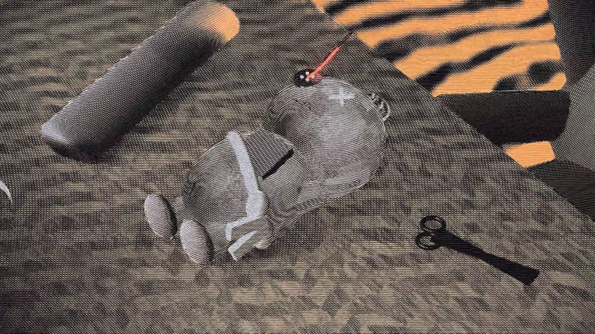
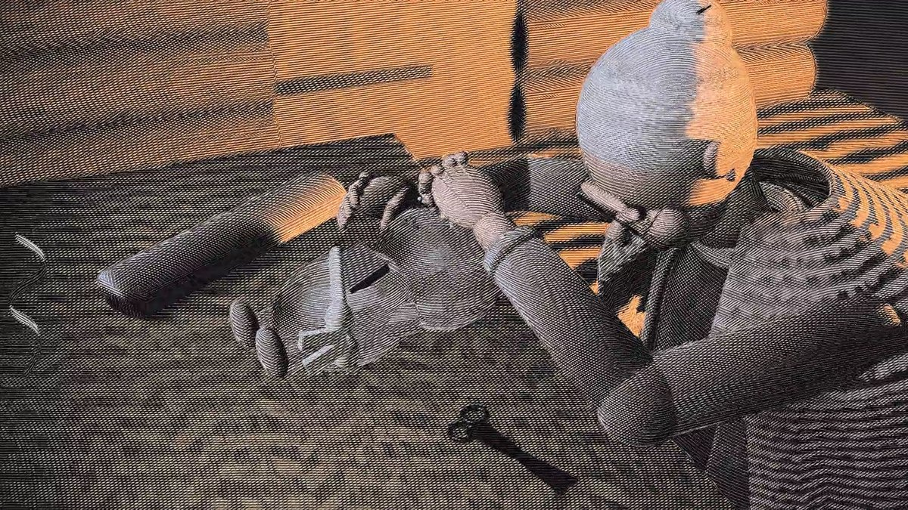
BeforeAfterDrag the thread to compare
Before, the needle sat in the doll's eye with nobody holding it.
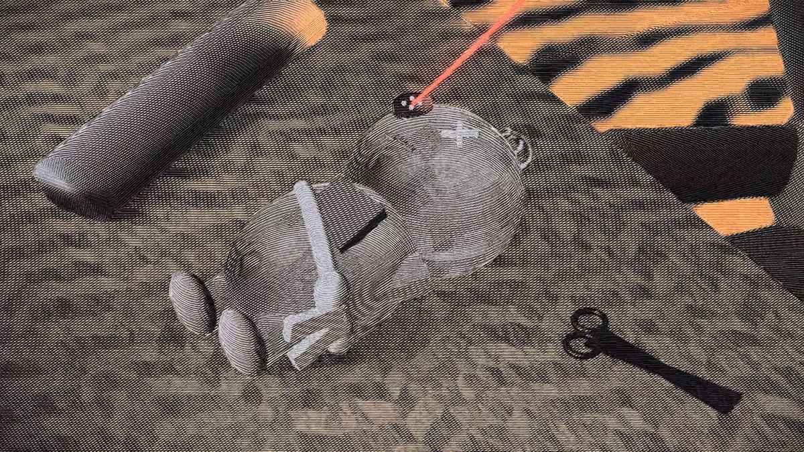
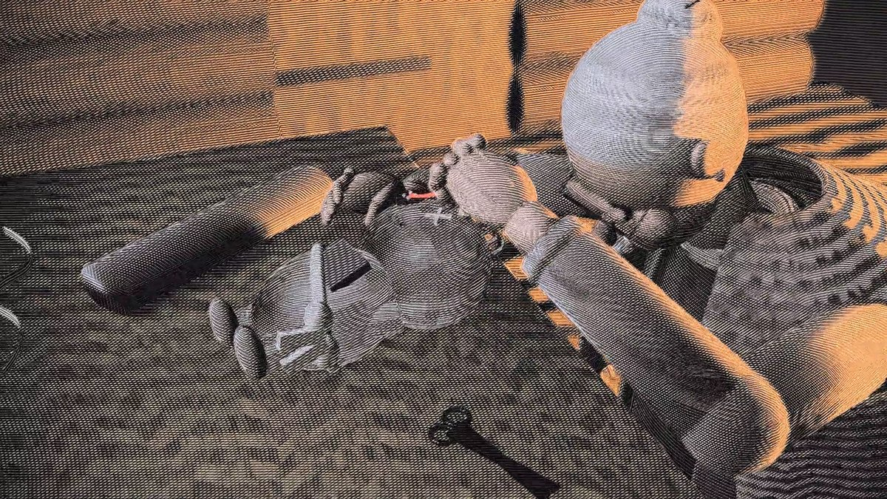
BeforeAfterDrag the thread to compare
Before, the needle rose out of the eye on its own.
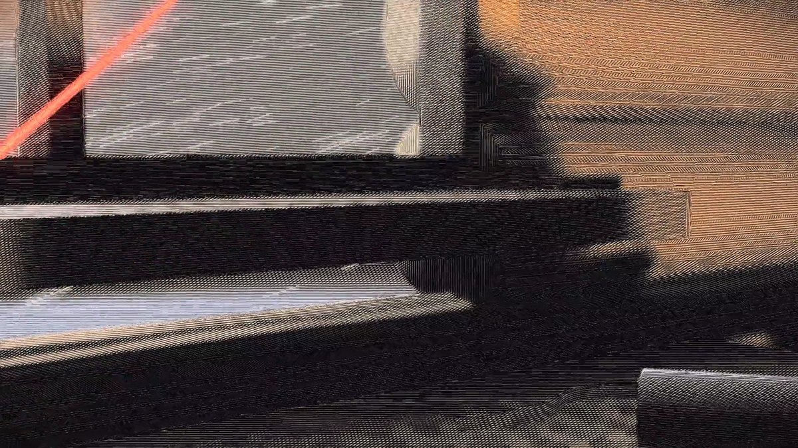
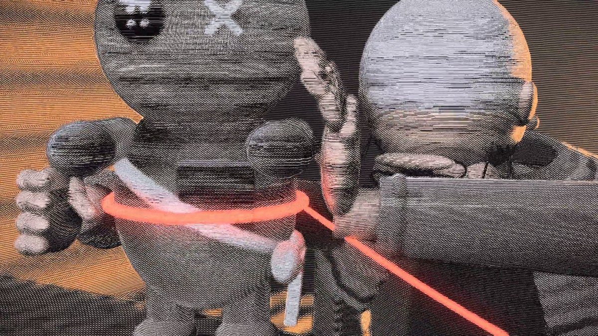
BeforeAfterDrag the thread to compare
Before, the doll floated up off the table by itself.
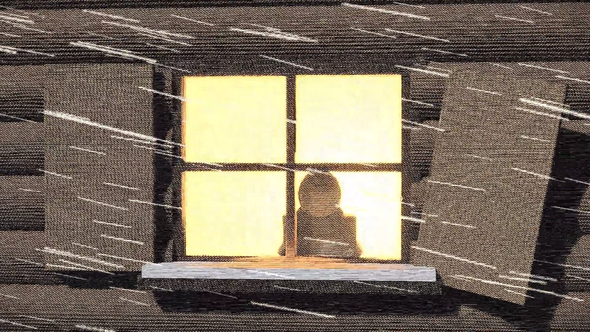
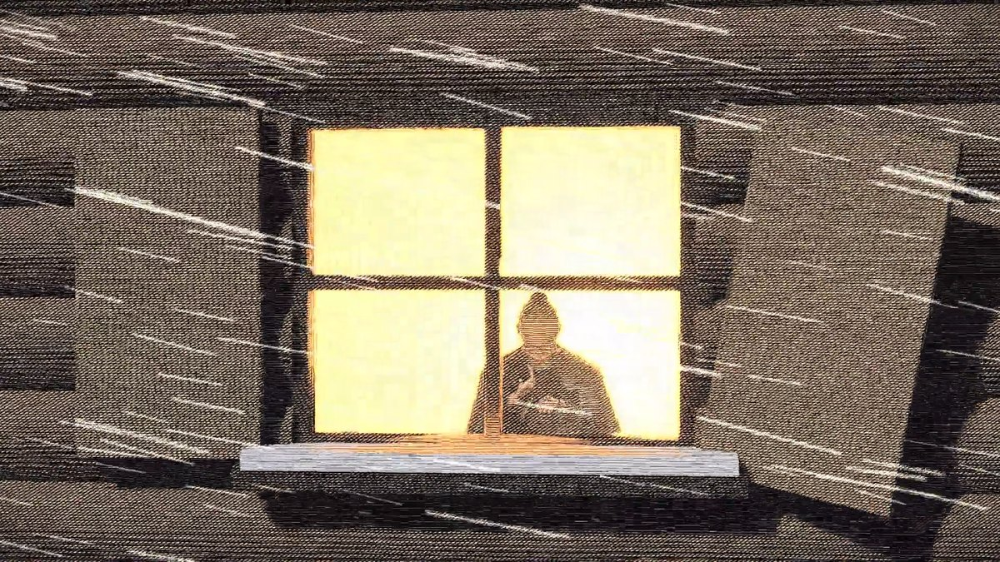
BeforeAfterDrag the thread to compare
Before, a plain silhouette with no hands to speak of.
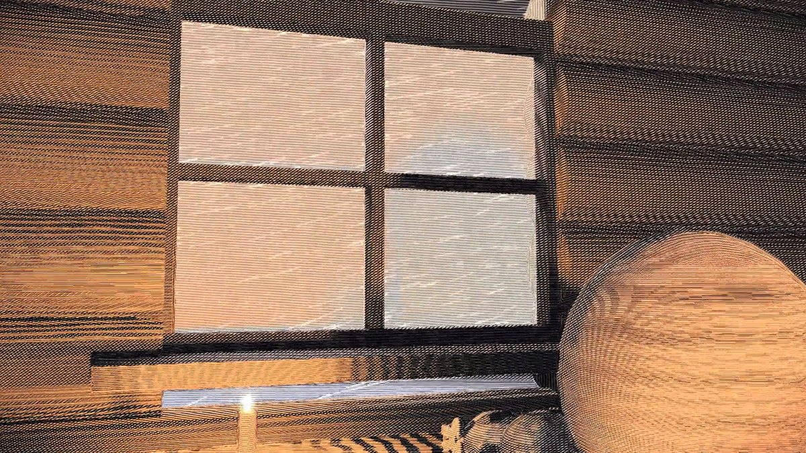
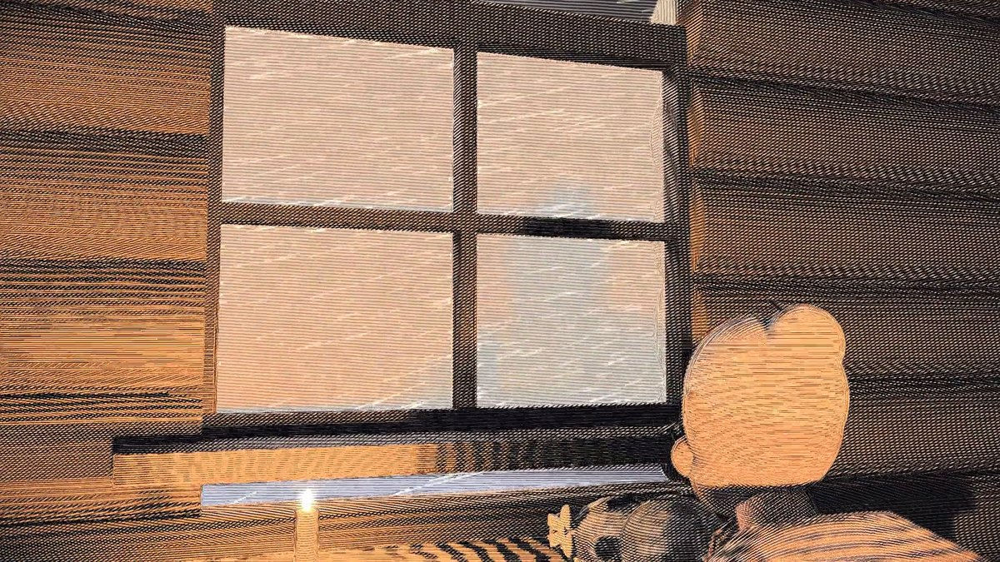
BeforeAfterDrag the thread to compare
Before, an egg-shaped head under a shawl.
A new check builds each shot in Blender, steps through it, and tests whether any part of her goes inside her own head, the other arm, the doll, the table, the stool or the chair. It found and helped fix a lot that the eye would miss:
What remains is fingertips and a thumb pressing into the doll's knitted body as she grips it, which is what a hand on soft yarn does.
Not checked:
shots.py if anything looks off.scripts/cine/lib.pyThe new knitter, hands and finger poses, the arm solver, knitting needles.scripts/cine/shots.pySewing, lifting, knitting, lantern and thread done by her hands; review stills K1–K3.scripts/cine/clipcheck.pyThe check for things passing through each other.scripts/cine/sets.pySeats at her height; the doll on the table, not in it.